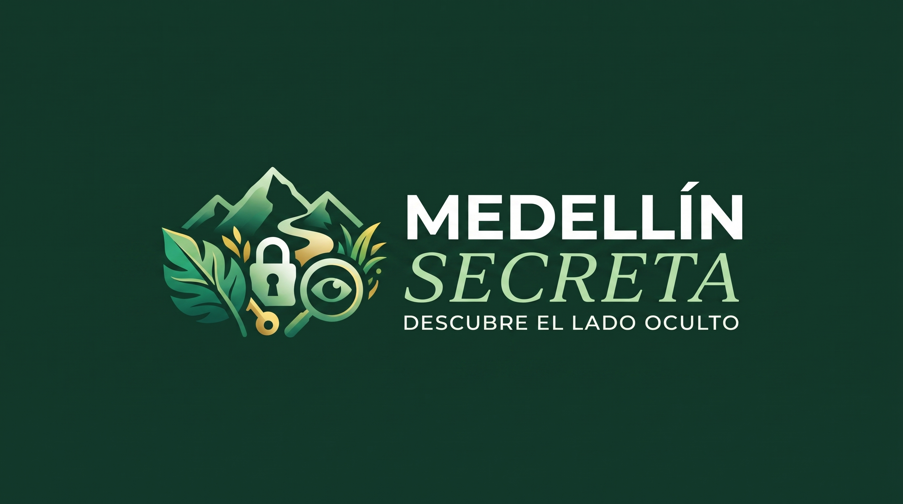
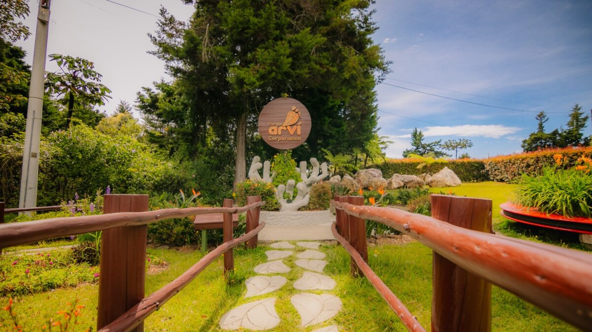

1. Rincones Auténticos
Historias y espacios que muestran la esencia cotidiana de Medellín, más allá de lo esperado.

Descubre los secretos de tu ciudad
Miradores secretos, cafés ocultos, historia urbana y rincones poco conocidos que revelan otra forma de vivir la ciudad.
Una ciudad, muchas historias
Una guía para mirar Medellín con otros ojos, conectar con sus historias y descubrirla a tu propio ritmo.
Historias y espacios que muestran la esencia cotidiana de Medellín, más allá de lo esperado.
Ideas organizadas para que cada paseo tenga un hilo, un propósito y espacio para la sorpresa.
Una mirada cercana que celebra el conocimiento, las voces y las recomendaciones de quienes viven aquí.
Una pista para tu próxima salida

Sus senderos y paisajes ofrecen un cambio de ritmo sin salir del valle. Reserva tiempo para recorrerlo con calma y revisar la información de visita antes de ir.
Descubrir másLa ciudad también la cuentas tú
Comparte la idea con tu gente, explora otras recomendaciones y ayúdanos a mantener viva la curiosidad por Medellín.
Explora y comparte